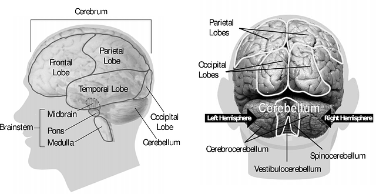
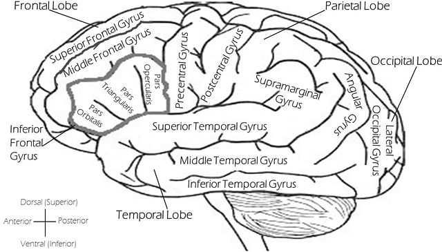
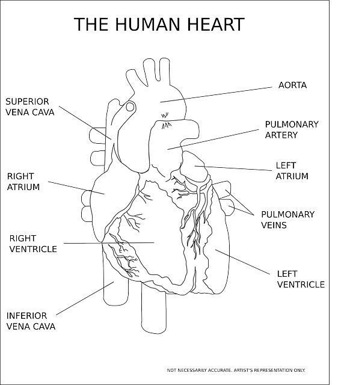
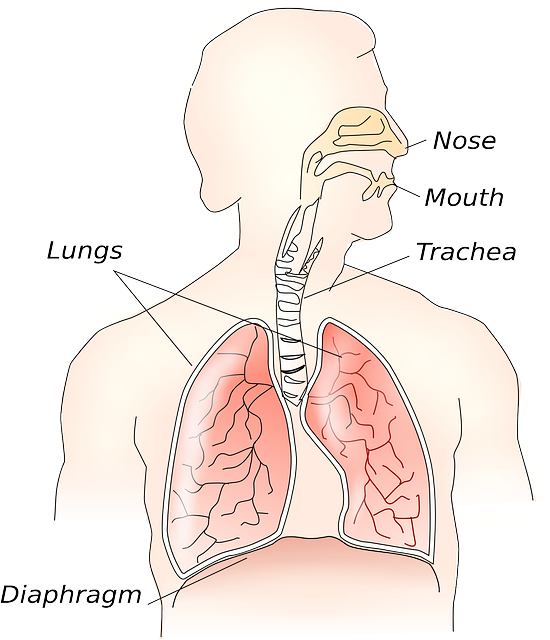
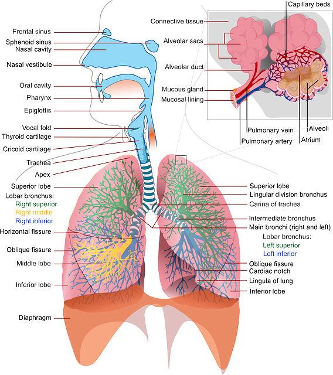
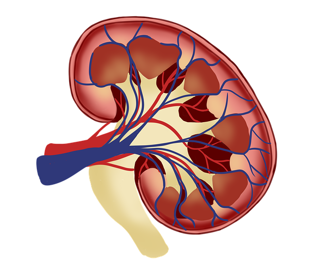
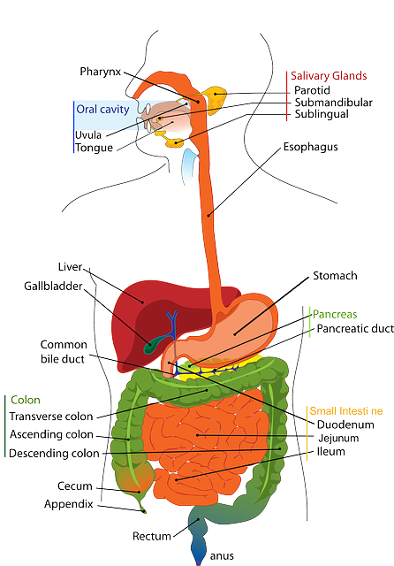
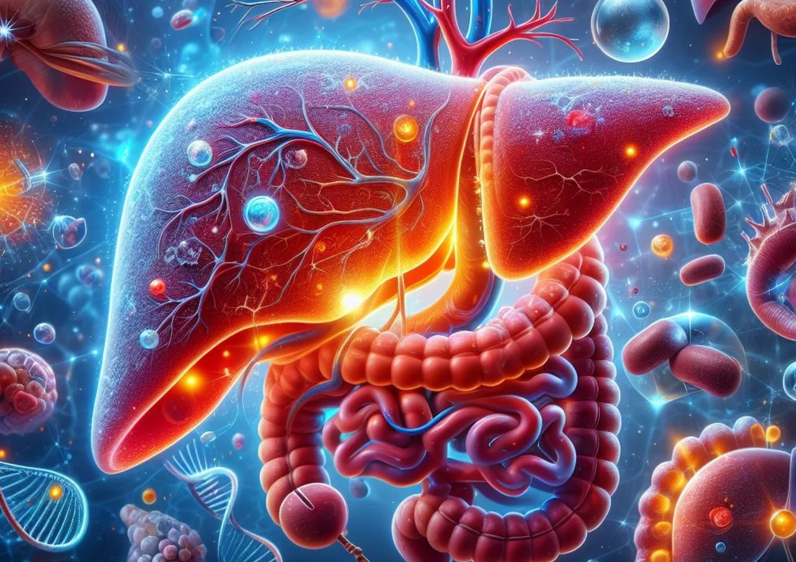

Human organs
Human Organs and Organ Systems - video
Organs and organ systems in the human body - text
Brain
Hove over image to increase it.
 
How Conditions Change Your Brain (scroll down when link opens)
How the human brain works
How the human brain works
9 Proofs You Can Increase Your Brain Power
Heart
Hove over image to increase it.

Blood Flow through the Heart in 2 MINUTES
Do You Know The Warning Signs of Heart Disease?
7 Warning Signs of Blocked Heart Arteries In Legs and Feet (Don't Ignore These Signals) | VisitJoy
Heart Specialist Secrets to Olive Oil...Weight Loss & Modern Heart Problems
Lungs
Hove over image to increase it.
 
How do lungs work?
How To Repair Lung Damage (Natural Remedies)
Kidneys
Hove over image to increase it.

How Your Kidneys Work
13 Warning Signs Your Kidneys Are Failing - Don't Ignore These Symptoms
Kidney health tips | How to keep kidneys healthy | Kidney stones solution
Top 10 Superfoods that can Heal your Kidneys | Kidney Disease Natural Treatment
Liver
Hove over image to increase it.
 
What does the liver do? - Emma Bryce
The Ultimate Liver Health Guide: Detox & Cholesterol Explained
The Shocking Link Between Your Liver and Your Feet: 12 Things Your Feet Can Tell You
5 Tips How to Fix Your Fatty Liver at Home
back to main page
continue to next page